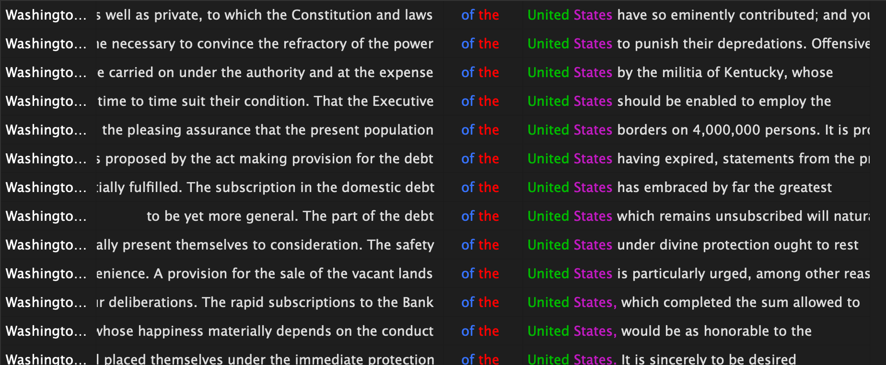
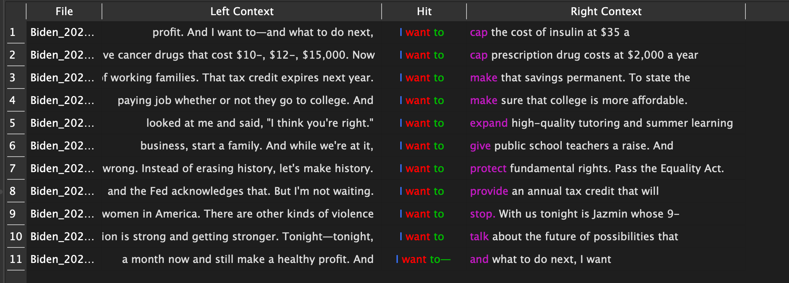
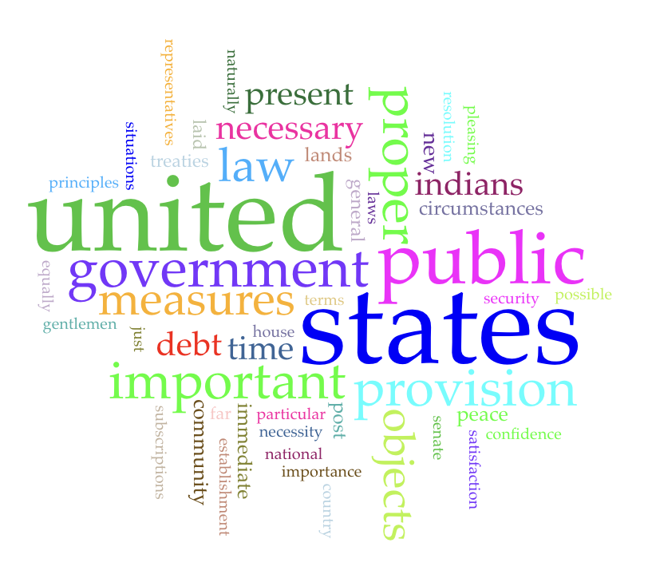
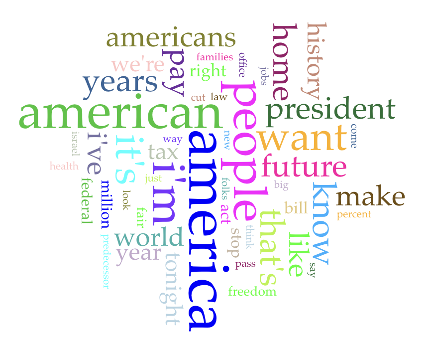
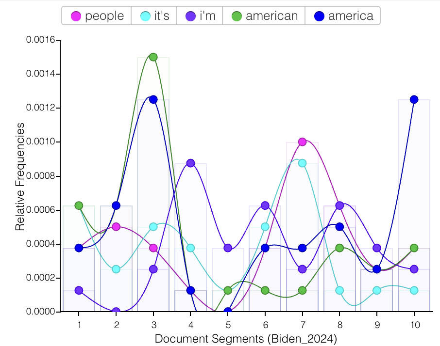

This is all text that I have used to do some speculation of state of the union addresses from 1791-2024. The comparison is to see what each of these speeches sound and presentation of how it is like between each of these times. This will be become interesting to compare specific state of the union addresses and view how these can be interpreted. If the text looks a bit small, it would be best to zoom it to read it.
Left side is Washington's state of the union in 1791. The right side is Biden's state of the union from 2024.

This is an analysis of text from Washington's 1791 state of the union address. From this, it looks like George Washington
may have talked about how the beginning of the United States is going to be and how the future will be for the United States.

This is an analysis of text from Biden's 2024 state of the union address. From this, these I want to's can explain as possibly promises
that he wants to make for American Citizens.

This is a much more simpler image of the Washington State of the Union text analysis. The bigger the word, the more common it is.

This is a much more simpler image of Biden State of the Union the text analysis. The bigger the word, the more common it is.
A graphical image of Washington's state of the union 1791 address.

A graphical image of how often each word is used in Biden's state of the union 2024 address.
With all this in mind, if we were to take ideas from both of these, it appears that more modern State of the Union addresses focus more on the world more openly than the past State of the Union addresses.
George Washington has a lot more focus on the United States while Joe Biden focuses a lot more on the outside world.